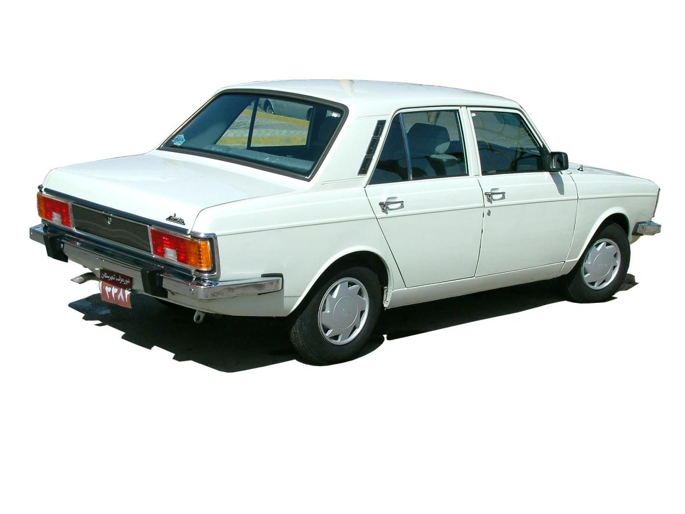

9 years building backend systems
4 of them on platform and infrastructure
| 1989 | Tim Berners-Lee writes a proposal at CERN. His manager writes on the front page: “Vague, but exciting…” |
| 1990 | The first browser and the first server. The browser was also an editor — we lost that half. |
| 1991 | The first public website goes live. It explains what a website is. |
| 1993 | Mosaic puts images in the page. CERN gives the web away, for free. |
| 1994 | The W3C is founded, and CSS is proposed. |
| 1995 | JavaScript is written in ten days. |
| 1999 | HTTP/1.1 is specified. Sixteen years pass before the next version. |
| 2008 | Chrome and V8. JavaScript gets fast enough to build applications in. |
| 2015 2022 |
HTTP/2, then HTTP/3 — which quietly stops using TCP. |
| Your browser calls itself | … |
| Its window is | … |
| It prefers | … |
| Cookies are | … |
| It believes it is | … |
None of that is written on the slide. Your browser volunteered it — which is also the first thing lecture 11 will worry about.
…| Files your browser fetched | … |
| Time until it finished | … |
By the end of the term, you should be able to answer all ten.
| Question | Lecture |
|---|---|
| Q1 | 2 — HTTP |
| Q2 | 3 — HTML |
| Q3 | 4 — CSS |
| Q4, Q5 | 5 — JavaScript |
| Q6 | 6 — JSON, Thrift and gRPC |
| Q7 | 7 — Go Programming (8 — CGI, for how it used to be done) |
| Q8 | 9 — Web Application Architectures |
| Q9 | 10 — Virtualization |
| Q10 | 11 — Web Security |
Waiting...Extra decks you can read on your own. Most were written by students who took this course before you.
| CGI | how servers answered requests before frameworks existed |
| CORS | the error you will hit in your first assignment |
| React · Vue · Redux | the front-end side, in more depth than the TA sessions |
| MongoDB · NATS | the databases and message brokers behind lecture 9 |
| Kubernetes · WebAssembly | where lecture 10 goes next, and a genuinely strange corner |
F12
All of them are free, and all of them run on whatever you own.
On paper: Introduction to Programming and Advanced Programming are prerequisites, and Database Design runs alongside this one.
| Component | Weight | Minimum requirement |
|---|---|---|
| Midterm | 35% | > 40% |
| Final | 35% | > 40% |
| Homework | 30% | Deadlines won’t be extended |

| MDN Web Docs | the reference for HTML, CSS and JavaScript. Not W3Schools |
| Responsive Web Design with HTML5 and CSS | Ben Frain |
| JavaScript: The Definitive Guide | David Flanagan |
| The Go Programming Language | Donovan & Kernighan |
| The RFCs | intimidating, then surprisingly readable. We will read parts of a few |